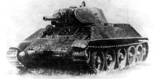
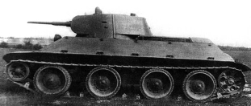
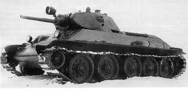
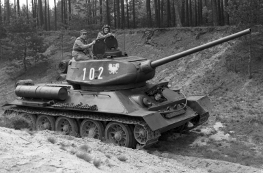

1938
Танк А-32
В мае 1938 Москве состоялось расширенное заседание Комитета Обороны СССР, где М. И. Кошкин и А. А. Морозов представили собравшимся проект лёгкого колёсно-гусеничного танка А-20, разработанный на Харьковском паровозостроительном заводе имени Коминтерна. В ходе обсуждения танка завязалась дискуссия о целесообразности применения колёсно-гусеничного движителя.


1939
Танк А-34
Впрочем, в это время в опытном цехе завода № 183 уже велась сборка двух таких танков, получивших заводской индекс А-34. Одновременно в течение октября – ноября 1939 года велись испытания двух А-32, догруженных на 6830 кг, то есть до массы А-34.

Пробег Харьков — Москва и кремлёвский показ
Утром 5 марта (по другим данным, в ночь с 5-го на 6-е) колонна из двух А-34 и двух тягачей «Ворошиловец», один из которых был оборудован под жильё, а другой – до отказа забит запчастями, двинулась в Москву. Из соображений секретности маршрут пробега был проложен в обход крупных населённых пунктов и основных дорог.
1940
Танк А-34
31 марта 1940 года был подписан протокол Комитета Обороны о постановке танка Т-34 (А-34) в серийное производство на заводе № 183 и по подготовке его выпуска на СТЗ.
По прибытии машин в Харьков после 3000 км пробега при разборке обнаружился ряд дефектов: подгорело ферродо на дисках главных фрикционов, появились трещинки на вентиляторах, обнаружились сколы на зубьях шестерён коробок передач, подгорели тормоза.
1941
Танк А-34
31 марта 1940 года был подписан протокол Комитета Обороны о постановке танка Т-34 (А-34) в серийное производство на заводе № 183 и по подготовке его выпуска на СТЗ.
По прибытии машин в Харьков после 3000 км пробега при разборке обнаружился ряд дефектов: подгорело ферродо на дисках главных фрикционов, появились трещинки на вентиляторах, обнаружились сколы на зубьях шестерён коробок передач, подгорели тормоза.
